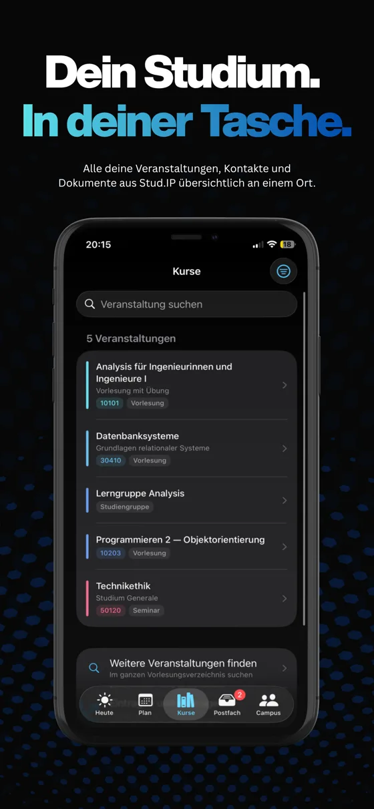
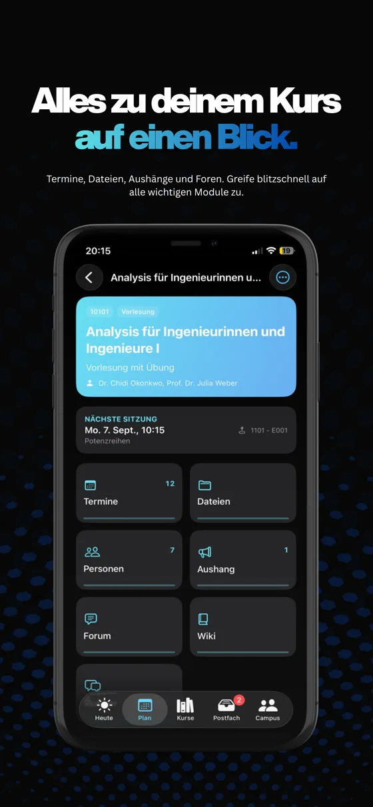
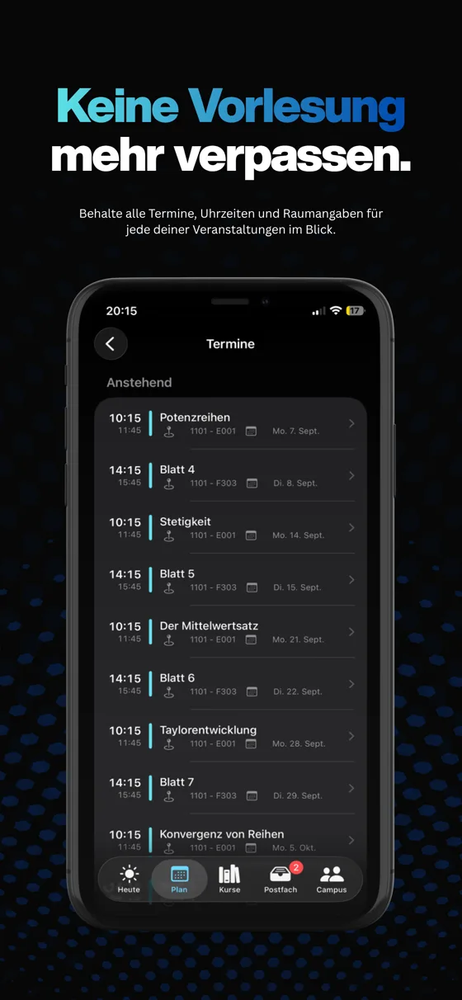
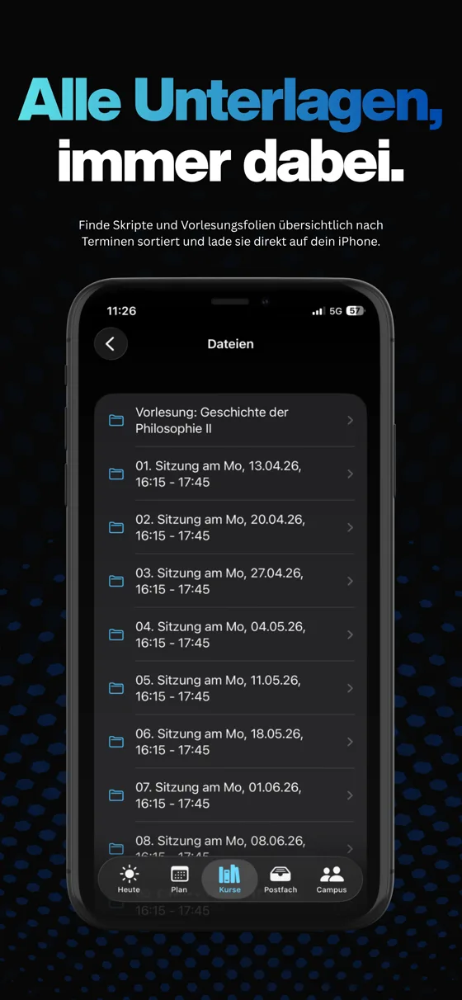

Dein Stud.IP.
In deiner Tasche.
Eine Hochschule, ganz: StudGo ist die native iOS-App für genau dein Stud.IP - Stundenplan, Kurse, Dateien, Postfach, Campus und Mensa, dazu Widgets und dein Plan im iOS-Kalender. Schnell, privat und kostenlos.
Kostenlos · Ohne Werbung · iOS ab 16 · Ohne Konto testbar
Alles, was der Uni-Alltag braucht
Von der ersten Vorlesung bis zur letzten Abgabe: StudGo deckt die Dinge ab, die man mehrmals pro Woche in der Hand hat. Alles in einer App, alles auch offline.
Stundenplan & Termine
Wochenraster mit Countdown zum nächsten Termin, Sitzungstermine mit Raum und Thema, Feiertage im Kalender. Auf „Heute“ steht, was in deinen Kursen neu dazugekommen ist. Alles auch offline, wenn der Campus-Funk gerade wieder weg ist.
Widgets
Der nächste Termin, ungelesene Nachrichten und der heutige Mensaplan auf dem Sperr- und dem Home-Bildschirm. Nach jedem Termin springt das Widget selbst zum nächsten, und es fragt nie selbst beim Server an.
Kurse, Dateien & Courseware
Vorlesungsverzeichnis mit Volltextsuche, Ordnerbäume mit Vorschau, Download und Teilen - Dateien und ganze Ordner lassen sich offline behalten, die Suche findet sie überall im Kurs. In der Personenansicht stehen die Gruppen des Kurses, etwa die Tutorien. Lernmaterialien aus der Courseware direkt in der App.
iOS-Kalender & Teilen
Auf Wunsch stehen die nächsten acht Wochen im eigenen Kalender „StudGo“: auf der Apple Watch, in CarPlay, bei Siri. Und der Stundenplan geht als Bild an die Lerngruppe.
Nachrichten & Blubber
Das Postfach und der Chat deiner Kurse, übersichtlich in einer App, mit Mitteilung, wenn etwas Neues ankommt.
Ankündigungen
Neuigkeiten aus deinen Kursen und von der Hochschule, sauber formatiert, inklusive Sprechstunden und Kontakten.
Campus & Mensa
Speisepläne in Tages- und Wochenansicht, je Gericht alle Preise und Kennzeichnungen, Raumangaben und die wichtigsten Links: alles, was zwischen zwei Vorlesungen fehlt.
Melden & Blockieren
Beiträge melden, Personen blockieren: Blockierte Inhalte verschwinden sofort aus allen Listen. Meldungen werden binnen 24 Stunden bearbeitet.
Demo-Modus
Die ganze App ohne Anmeldung ausprobieren, mit erfundenen Daten, die keinen Uni-Server berühren. Parser und Ansichten laufen unverändert: Was du siehst, ist die echte App.
Acht Farbwelten
Jeder Kurs bekommt aus seiner ID eine eigene Farbe, in Plan, Liste und Kursliste dieselbe. Dazu ein Dunkelmodus, der die Widgets mitnimmt, und acht Farbwelten für die ganze App.
Sieh dir die App an
Fünf Blicke in StudGo, vom Wochenraster bis zum Postfach. Tippe dich durch die Ansichten oder lass sie selbst laufen.




Der Start in die App: der nächste Termin mit Countdown, ungelesene Nachrichten und neue Ankündigungen auf einen Blick.
Das Wochenraster mit Kursfarben, Räumen und Überschneidungen. Feiertage stehen direkt am Datum.
Alle Veranstaltungen des Semesters, umschaltbar, mit Volltextsuche und allen Details je Kurs.
Dateien je Kurs: Ordner durchblättern, Vorschau öffnen, herunterladen und teilen.
Postfach und Blubber in einer Übersicht: lesen, Antworten, Verfassen, Profile antippen.
In einer Minute startklar
Kein Konto nötig, um hinzuschauen: Der Demo-Modus zeigt die ganze App, bevor du dich entscheidest.
Kostenlos aus dem App Store: keine In-App-Käufe, keine Werbung. iOS ab 16.
Mit dem Hochschulkonto über OAuth: Dein Passwort sieht die App nie. Oder erst im Demo-Modus stöbern, ganz ohne Konto.
Widgets auf den Sperrbildschirm legen, den Kalender-Abgleich einschalten. Eine kurze Einführung führt durch alles.
Privates Projekt, eigene Prinzipien
StudGo ist ein privates Studentenprojekt. Und genau deshalb anders.
Privat von Haus aus
Die Anmeldung läuft per OAuth 2.0 mit PKCE über das Hochschulkonto. Dein Passwort sieht die App nie. Inhalte bleiben auf deinem Gerät, Tokens liegen ausschließlich im Schlüsselbund. Es gibt keinen Anbieter-Server und keine Nutzungsstatistik.
Offen und kostenlos
Der komplette Quelltext liegt unter MIT-Lizenz auf GitHub. Kein Preisschild, keine In-App-Käufe, keine Werbung. Und das bleibt so.
Eine Hochschule, ganz
StudGo verbindet sich direkt mit studip.uni-hannover.de und deckt den Alltag einer Hochschule komplett ab: Vorlesung, Kurs, Postfach, Mensa. Statt durchschnittlich für hundert Hochschulen gebaut zu sein, ist es genau für dein Stud.IP gemacht - mit allem, was dazugehört.
Deine Daten nehmen den direkten Weg
StudGo hat kein eigenes Backend und keine Statistik. Die App spricht verschlüsselt direkt mit dem Stud.IP-Server deiner Hochschule; Inhalte bleiben auf deinem Gerät, Tokens ausschließlich im Schlüsselbund.
Häufige Fragen
Funktionieren die Widgets auch ohne Empfang?
Ja. Die Widgets fragen nie selbst beim Uni-Server an: Sie zeigen den Stand, den die App beim letzten Öffnen oder beim Hintergrundlauf hinterlegt hat. Ohne Internet steht dort also der letzte bekannte Termin, nicht eine Fehlermeldung.
Kommt mein Stundenplan in den iPhone-Kalender?
Ja, wenn du es einschaltest: im Profil unter „Stundenplan im iOS-Kalender“. StudGo legt dafür einen eigenen Kalender „StudGo“ an, trägt die nächsten acht Wochen ein und hält ihn bei jedem Öffnen aktuell. Andere Termine liest die App nicht, und Ausschalten entfernt den Kalender wieder.
Kann ich StudGo ohne Konto ausprobieren?
Ja. Über „Demo ohne Anmeldung ansehen“ auf dem Anmeldebildschirm öffnet sich die vollständige App mit erfundenen Beispieldaten: ohne Konto, ohne Netzverbindung, ohne dass ein Uni-Server berührt wird.
Gibt es StudGo auf Englisch?
Ja. Seit Fassung 1.8.2 folgt die App der Sprache deines iPhones: Deutsch oder Englisch. Inhalte aus Stud.IP, etwa Kursnamen, stehen so da, wie die Lehrenden sie eingetragen haben.
Mit welchem Stud.IP funktioniert StudGo?
StudGo ist für die Stud.IP-Installation unter studip.uni-hannover.de gebaut und verbindet sich direkt mit ihr. Die Anmeldung läuft über dein Hochschulkonto.
Welche iOS-Version brauche ich?
iOS 16 oder neuer. Die App folgt der eingestellten Textgröße deines Geräts und gibt es auf Deutsch und Englisch.
Was kostet StudGo?
Nichts. Die App ist kostenlos, ohne Werbung und ohne In-App-Käufe. Der Quelltext steht unter MIT-Lizenz offen auf GitHub.
Gibt es StudGo für Android?
Derzeit nur iOS (ab iOS 16). Eine Android-Version steht nicht auf der Roadmap. Die eine Plattform richtig zu machen, reicht für ein Nebenprojekt.
Was passiert mit meinen Daten?
Die App hat kein eigenes Backend und spricht verschlüsselt direkt mit dem Stud.IP-Server. Zugangs-Tokens liegen nur im Schlüsselbund deines Geräts. Alle Einzelheiten stehen in der Datenschutzerklärung.
Was passiert beim Abmelden?
Beim Abmelden löscht StudGo alle Daten des Kontos von deinem Gerät: Tokens, Zwischenspeicher, Downloads und offline behaltene Dateien, Blockliste, ausgeblendete Termine und geplante Mitteilungen - auch die Widgets verlieren dabei ihren Schnappschuss. Reine Einstellungen wie die Farbwelt bleiben. Was du in Stud.IP hochgeladen oder eingetragen hast, bleibt dort unberührt.
Kann ich Dateien auch offline lesen?
Ja. Über „Offline behalten“ - je Datei oder für einen ganzen Ordner - landen Kopien verschlüsselt auf deinem Gerät und sind ohne Empfang lesbar, etwa im Flugmodus. Im Profil steht unter „Offline behalten“, wie viel Platz sie brauchen; dort lassen sich alle mit einem Tipp wieder löschen.
Ich sehe Inhalte, die dort nicht hingehören. Was kann ich tun?
Lange auf den Beitrag tippen und „Beitrag melden“ wählen, oder die Person blockieren: Blockierte Inhalte verschwinden sofort aus allen Listen. Jede Meldung erreicht den Entwickler unmittelbar und wird innerhalb von 24 Stunden bearbeitet.
Ich habe einen Fehler gefunden. Wohin damit?
Am besten als Issue auf GitHub oder per Mail an maximilian.elias.paasch@gmail.com.
Dazu steht hier noch nichts. Am schnellsten hilft ein Blick in die Issues auf GitHub oder eine kurze Mail an maximilian.elias.paasch@gmail.com.
Als Nächstes geplant
Bereit für das Semester?
Kostenlos, ohne Anmeldung testbar und in einer Minute installiert.